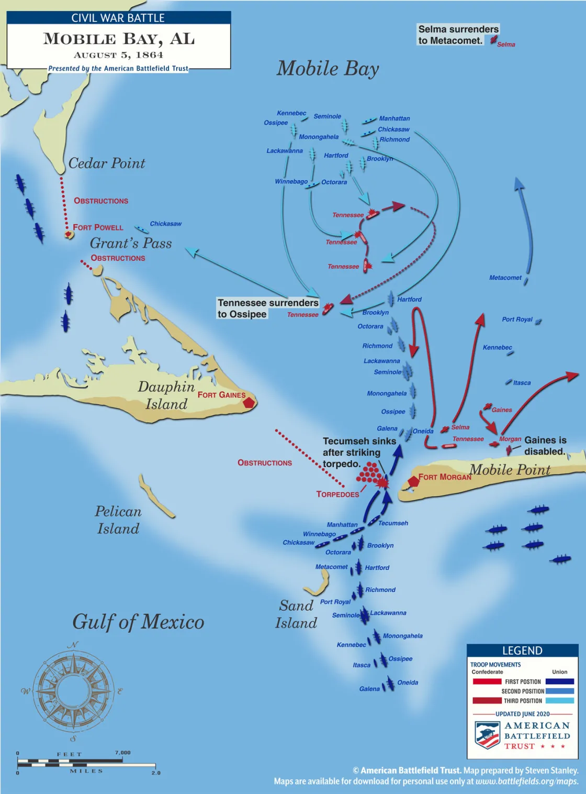

On the table
Battle Maps

Battle of Mobile Bay
Farragut's eighteen ships run the minefield under Fort Morgan's guns, the Tecumseh sinks in under a minute, and the CSS Tennessee makes her lone, doomed charge.
Read the full account →
Fort Blakeley
Sixteen thousand Union troops, nearly a third USCT, charge nine Confederate redoubts across a three-mile front — the last major battle of the Civil War.
Read the full account →